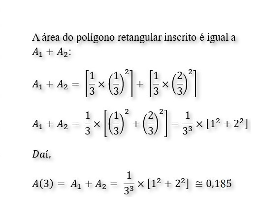
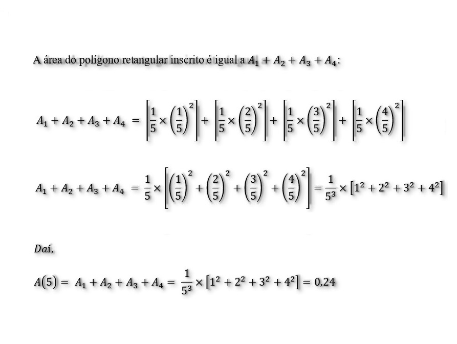
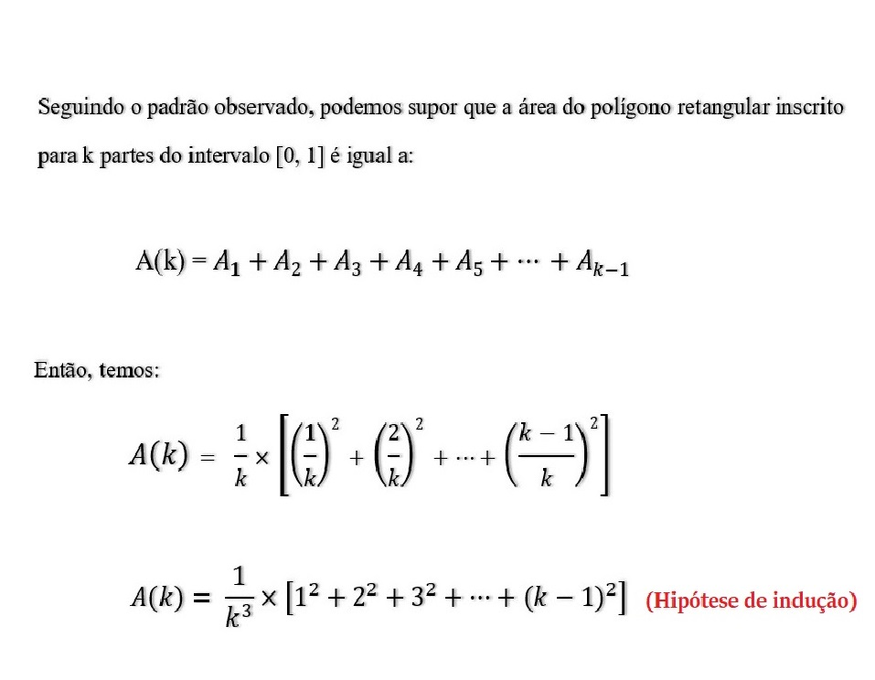

A parábola será dividida em 3 partes iguais. Quantos retângulos serão formados?

Qual é a área do polígono retangular inscrito nesse gráfico? (Considere uma aproximação de três casas decimais.)

Agora, a parábola será dividida em 4 partes. Quantos retângulos serão formados?

Considerando uma aproximação de três casas decimais, qual é a área para n = 4?

Considerando uma divisão do intervalo [0, 1] em cinco partes iguas, para n = 5, uantos retângulos serão formados?
Qual é a área do polígono retangular inscrito formada pela partição do intervalo em n = 5 partes iguais?


Considerando n = k partes iguais do intervalo [0, 1], como poderiamos representar em função de k, o cálculo da área do polígono retangular inscrito?
• Experimente diferentes valores de n, antes de responder essa pergunta. Clique no botão "Próxima Etapa".
• Após a experimentação, clique no botão "Verificar Resposta" para seguir para o próximo passo.
